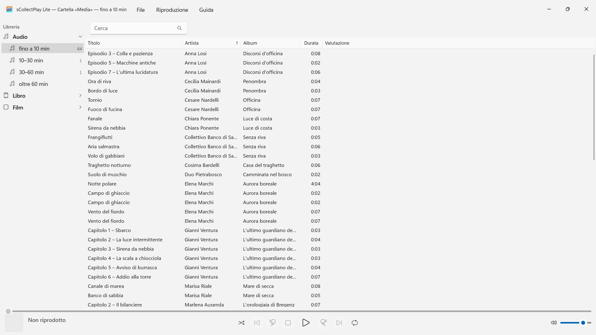
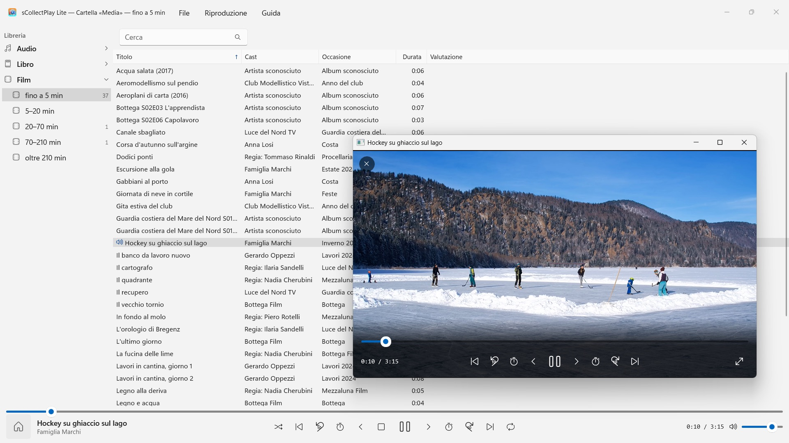

sCollectPlay Lite
Gratis: scegli una cartella e riproduci – senza importazione, senza copiare nulla
Gratis · Su Microsoft Store da novembre 2026Gratis: scegli una cartella e riproduci – musica, audiolibri, podcast, film ed e-book si ordinano da soli. Senza importazione, senza account, senza cloud. Anche librerie di iTunes (XML).


sCollectPlay Lite riproduce la tua collezione là dove si trova: in cartelle qualsiasi, su dischi esterni o su un’unità di rete. Scegli una cartella, e musica, audiolibri, podcast, film ed e-book compaiono ordinati in un elenco – senza importazione, senza copiare nulla, senza che nei tuoi file cambi qualcosa.
24 lingue: inglese, tedesco, ceco, croato, olandese, finlandese, francese, ungherese, italiano, giapponese, coreano, norvegese bokmål, persiano, polacco, portoghese, rumeno, russo, spagnolo, svedese, thailandese, turco, ucraino, cinese (semplificato e tradizionale). L’app segue la lingua di visualizzazione di Windows.
Questa edizione riproduce una fonte per sessione: una cartella o un XML. Chi ne apre un’altra sostituisce quella precedente.
DUE FONTI
- Cartelle: sCollectPlay Lite scansiona una cartella con le sue sottocartelle e legge titolo, artista, album, genere e durata direttamente dai file. «Aggiorna cartelle scansionate» (Ctrl+R) legge poi solo ciò che è nuovo, modificato o rimosso.
- XML di iTunes: la libreria di iTunes per Windows con playlist, valutazioni e conteggi di riproduzione. Se un brano è musica, audiolibro, podcast, lungometraggio, serie o video musicale, l’app lo ricava dall’XML.
ORDINE SENZA FATICA
Una cartella non dice se un file è una canzone o un audiolibro. Per questo durante la scansione sCollectPlay Lite suddivide per durata: audio fino a 10, 10–30, 30–60 e oltre 60 minuti, video dai clip brevi fino ai film di oltre tre ore e mezza. Così canzoni, episodi di radiodrammi e audiolibri restano separati, senza che tu debba impostare nulla. E-book e PDF l’app li riconosce dall’estensione.
TROVARE
- Ricerca per titolo, artista, album, genere e altri campi – anche nelle playlist
RIPRODUZIONE
- Audio con coda, riproduzione casuale e ripetizione
- Video in una finestra propria, con rallentatore, avanzamento fotogramma per fotogramma, scelta della traccia audio e dei sottotitoli e schermo intero
- Windows riproduce da sé la maggior parte dei formati – MP3, AAC, FLAC, OGG, Opus e WMA come pure MP4, MKV, AVI, WMV e MPG. Ciò che non conosce, per esempio AIFF, DSD o FLV, l’app lo passa al programma impostato in Windows per quel tipo di file – per esempio VLC
DI PIÙ NELLA VERSIONE COMPLETA
sCollectPlay riunisce più cartelle in una raccolta, ricorda l’ultima fonte anche dopo il riavvio e offre un browser a colonne per genere, artista e album, colonne a libera scelta, playlist proprie e smart e l’esportazione delle playlist come cartella con un elenco M3U8 per VLC e dispositivi.
I TUOI FILE RESTANO COME SONO
sCollectPlay Lite non scrive tag e non modifica metadati. Elimina solo su tuo comando esplicito: un file multimediale da cartelle scansionate o da un XML di iTunes finisce allora nel Cestino (sulle unità senza Cestino, come quelle di rete, viene eliminato definitivamente dopo conferma). I file di una libreria sCollect non vengono mai eliminati dall’app.
SUL TUO PC, E SOLO LÌ
Nessun account, nessun cloud, nessuna analisi, nessuna pubblicità. L’app accede solo alle cartelle che le dai. Ogni lingua con guida completa.
- Richiede Windows 11 o versioni successive
- 24 lingue
- Assistenza: SwiftAppsBavaria@gmx.net
- Informativa sulla privacy di sCollectPlay e sCollectPlay Lite